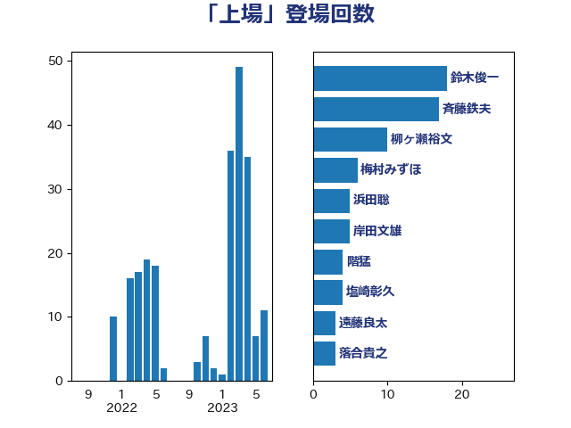

単語「上場」

| 鈴木俊一 | 自由民主党 | 18 回 |
| 斉藤鉄夫 | 公明党 | 17 回 |
| 柳ヶ瀬裕文 | 日本維新の会 | 10 回 |
| 梅村みずほ | 日本維新の会 | 6 回 |
| 浜田聡 | NHK党 | 5 回 |
| 岸田文雄 | 自由民主党 | 5 回 |
| 階猛 | 立憲民主党 | 4 回 |
| 塩崎彰久 | 自由民主党 | 4 回 |
| 遠藤良太 | 日本維新の会 | 3 回 |
| 落合貴之 | 立憲民主党 | 3 回 |
| 源馬謙太郎 | 立憲民主党 | 3 回 |
| 浅田均 | 日本維新の会 | 3 回 |
| 宮下一郎 | 自由民主党 | 3 回 |
| 吉田統彦 | 立憲民主党 | 3 回 |
| 吉田はるみ | 立憲民主党 | 3 回 |
| 中谷真一 | 自由民主党 | 3 回 |
| 三上えり | 立憲民主党 | 3 回 |
| 馬淵澄夫 | 立憲民主党 | 2 回 |
| 鈴木義弘 | 国民民主党 | 2 回 |
| 西村康稔 | 自由民主党 | 2 回 |
| 若松謙維 | 公明党 | 2 回 |
| 芳賀道也 | 国民民主党 | 2 回 |
| 美延映夫 | 日本維新の会 | 2 回 |
| 福島伸享 | 無所属 | 2 回 |
| 石井章 | 日本維新の会 | 2 回 |
| 田村貴昭 | 日本共産党 | 2 回 |
| 田中健 | 国民民主党 | 2 回 |
| 片山さつき | 自由民主党 | 2 回 |
| 武井俊輔 | 自由民主党 | 2 回 |
| 杉久武 | 公明党 | 2 回 |
| 小宮山泰子 | 立憲民主党 | 2 回 |
| 大石あきこ | れいわ新選組 | 2 回 |
| 伊藤渉 | 公明党 | 2 回 |
| 伊藤孝恵 | 国民民主党 | 2 回 |
| 青柳仁士 | 日本維新の会 | 1 回 |
| 長谷川英晴 | 自由民主党 | 1 回 |
| 金村龍那 | 日本維新の会 | 1 回 |
| 金子恭之 | 自由民主党 | 1 回 |
| 金子俊平 | 自由民主党 | 1 回 |
| 里見隆治 | 公明党 | 1 回 |
| 角田秀穂 | 公明党 | 1 回 |
| 西村智奈美 | 立憲民主党 | 1 回 |
| 萩生田光一 | 自由民主党 | 1 回 |
| 稲富修二 | 立憲民主党 | 1 回 |
| 秋本真利 | 無所属 | 1 回 |
| 福山哲郎 | 立憲民主党 | 1 回 |
| 神津たけし | 立憲民主党 | 1 回 |
| 石井苗子 | 日本維新の会 | 1 回 |
| 畦元将吾 | 自由民主党 | 1 回 |
| 牧野たかお | 自由民主党 | 1 回 |
| 浜口誠 | 国民民主党 | 1 回 |
| 森屋隆 | 立憲民主党 | 1 回 |
| 東徹 | 日本維新の会 | 1 回 |
| 末松信介 | 自由民主党 | 1 回 |
| 岬麻紀 | 日本維新の会 | 1 回 |
| 岩谷良平 | 日本維新の会 | 1 回 |
| 岩渕友 | 日本共産党 | 1 回 |
| 岡本三成 | 公明党 | 1 回 |
| 山際大志郎 | 自由民主党 | 1 回 |
| 小田原潔 | 自由民主党 | 1 回 |
| 小池晃 | 日本共産党 | 1 回 |
| 小山展弘 | 立憲民主党 | 1 回 |
| 小倉將信 | 自由民主党 | 1 回 |
| 塚田一郎 | 自由民主党 | 1 回 |
| 堤かなめ | 立憲民主党 | 1 回 |
| 堀場幸子 | 日本維新の会 | 1 回 |
| 吉良州司 | 無所属 | 1 回 |
| 前原誠司 | 国民民主党 | 1 回 |
| 住吉寛紀 | 日本維新の会 | 1 回 |
| 伴野豊 | 立憲民主党 | 1 回 |
| 上野賢一郎 | 自由民主党 | 1 回 |
| 三宅伸吾 | 自由民主党 | 1 回 |